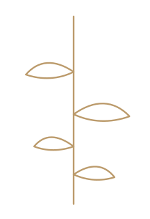

A field notebook about models, machines, and the questions in between.
Hi, I’m Sreevidya. I began in mechanical engineering, wandered into applied machine learning,
and gradually found myself most interested in one kind of question:
how do intelligent systems actually work, and how do we know when to trust them?
currently tracing:
interpretability, factuality, evaluation, and useful failure analysis
cover
prologue
How this story starts
I like systems that reveal themselves slowly. That used to mean aircraft structures,
loads, and failure. Now it means machine learning systems and language models.
Across both worlds, what stays constant is the instinct: understand the system deeply enough
to know not just when it works, but how it fails. That is probably why I ended up caring about
interpretability, reliability, and evaluation.
The through-line
From fatigue analysis to predictive modeling to language models, I keep returning to the same
habit of mind: look under the surface, ask what the output hides, and make sense of the mechanism.
01
chapter pages
The route was not very linear.
chapter I
Engineering and failure
My first serious research instinct formed around physical systems: stress, fatigue, and residual life.
At DRDO, I worked on flight-data-based fatigue damage estimation and saw how reliability becomes meaningful
only when you examine failure carefully.
DRDO • MATLAB • fatigue analysis
chapter II
Applied ML in messy environments
At Daimler India Commercial Vehicles, the systems became less physical and more behavioral.
I built predictive models and analytics workflows on large CRM data, where explanation and usefulness
mattered just as much as performance.
Daimler • predictive modeling • SHAP
chapter III
Questions about language models
More recently, my curiosity shifted toward model behavior itself: internal representations, hallucinations,
factuality, evaluation, and what model outputs fail to tell us about what the model knows.
LLMs • interpretability • evaluation

02
chapter pages
Questions I keep dog-earing.
What does a model know before it says it?
I’m drawn to the gap between encoded information and generated response, especially in factuality and hallucination settings.
Can interpretability help us debug, not just explain?
The explanations I care about should reveal mechanisms, failure modes, or levers for intervention.
How much progress is really just better evaluation?
Sharper questions, stronger test cases, and honest edge-case analysis often matter more than polished benchmark headlines.
the work I want to do sits somewhere around these questions.
03
field notes
Selected work, written like fragments.
note A
Applied interpretability experiments
Small controlled experiments on model representations, attribution, and failure analysis in language models.
I’m especially interested in linking internal behavior to what a model eventually generates.
note B
CRM predictive modeling
Large-scale customer analytics, segmentation, and predictive modeling with Random Forests, Logistic Regression,
clustering, and SHAP-based explanation.
note C
Aircraft fatigue analysis
Residual-life estimation workflows using flight-recorder inputs, S–N curves, and Miner’s rule in a reliability context.
margin note
Things I also build
Flask and React apps, composite-property prediction tools, telemetry models,
speech pipelines with Whisper, and small computer-vision prototypes.
A few notes to self
Build before you claim.
Measure what breaks, not just what averages well.
Useful research should survive contact with reality.
Curiosity is a stronger compass than polish.
04
epilogue
I’m still becoming the kind of researcher I want to be.
That is why this website feels like a storybook and not a finished brochure. It’s less about appearing complete
and more about showing the thread that connects what I’ve worked on so far.
If your work touches reliable AI, language-model behavior, interpretability, evaluation, or thoughtful product-building,
I’d love to talk.